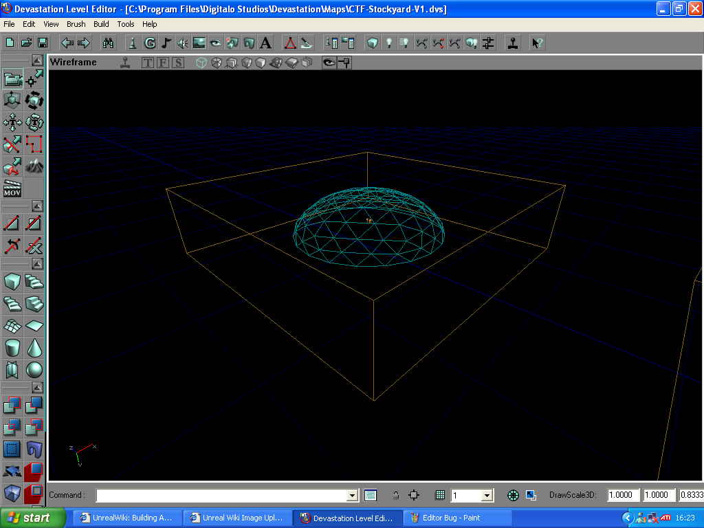

Building A SkyBox
Introduction
The SkyBox is a method of adding a continuous sky above a map.
A nice skybox adds greatly to the realism of an outdoor map or an indoor map with windows. It also adds to the realistic effect of moving from one point to another one in a map.
A skybox is much better than adding a small box containing sky Texture (UT)s just outside of each individual window.
A skybox can be almost any shape but a box is usually used because it is easier to align the textures than a cylinder, trapezoid, or sphere. A sphere should be avoided because of texture alignment problems.
Probably the best way to get to understand the design of the skybox is just open a map in UnrealEd that has sky that you like. They are generally simple; just a cube with size selected to fit the textures used, lighting, and one or two transparent sheets on top for the actual sky texture. I would suggest the CTF-EpicBoy skybox as an optimal design. They can be quite complex, however, with multiple movers and decorations, and numerous textures with different surface properties set.
In UT2003, you must have a skybox for using the Sunlight Actor.
A Simple SkyBox
- Subtract a box some distance away from your level (If it is too close, it may cast a shadow!) The size depends on the backdrop textures you plan to use. Say you're using a texture set consisting of 8 panels and each is 512x512. A skybox that is 1024x1024x512 high should suffice. A typical skybox is 128*1024*1024.
- Make sure your textures are aligned. You may have to select No Smooth in the surface properties to prevent seams at the edges of the sky box itself.
- You can also throw in a sheet with a moon texture in the sky or some clouds for extra foggy effect.
- Do your lighting to get it looking the way you want it.
- Add a Actor >> Info (UT) >> ZoneInfo >> SkyZoneInfo actor in the middle of the skybox.
- Back on your level, select the surfaces on which you want the sky depicted. Open the Surface Properties Window and in the Surface Flags (UT) tab check Fake Backdrop and Unlit. If you don't make it unlit than your level's lighting might spoil the nice lighting in your skybox. Experiment with this aspect if you'd like.
- Rebuild your level.
- To see the skybox projected on surfaces in the editor, make sure realtime preview mode is turned on in the 3D UnrealEd Viewport.
Advanced Skyboxes
You can create MultiSkyBox or a rotating skybox.
Static Mesh Skyboxes
This is another way of creating a nice skybox. Im using Devastation for the basic tutorial, but im sure the procedure for other editors should be roughly the same.
1: subtract a box a little bit away from your level. Make it 1000x1000x1000. The size does'nt really matter that much, but its better to be too big rather than too small.
2: Go into the Embarcadero package and look for the sky static mesh. Many of the static mesh packages in devastation have a suitable mesh in them, so feel free to use another one.
3: Place the static mesh inside the box, roughly in the middle. Add a SkyZone Info actor right in the middle of the static mesh sky.
4: The fake backdrop procedure remains the same using this method so refer to the previous section for information on how to get the skybox to work.
5: Rebuild your level. To view the sky, right click on a 3d Viewport and select View→Show backdrop.
Note: you can add another static mesh around the skyzone info too for added effect, although this is not vital.
When finished, it should look something like this:
 The completed skybox, with the static mesh in the middle and the Skyzone info placed in the center |
Experiment
...with colored lighting, various textures and translucency effects. Colors
...with moving the skybox info actor around in your skybox and see what happens in your perspective view at the fake back drop. You'll need to have real time enabled in perspective view.
...with other shapes. A skybox does not have to be a box!
...with fog, but it might slow down your level a little. —Zxanphorian
The Panorama brushbuilder is designed to quickly create a set of sheets to use with the skybox mountain and Skyscraper textures.
Related Topics
- Terragen is a free, photo realistic environment rendering program.